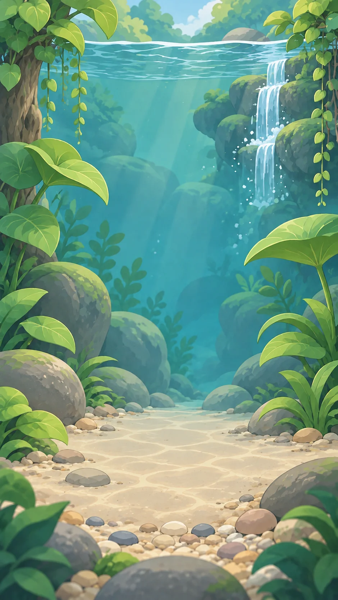

A companion beyond the screen
Android home widgets and a live countdown keep your focus close. Optional local reminders help you return.
A new little companion. Coming to Android.
Meet Axo. A gentle focus companion for busy minds, small beginnings, and the days when getting started is the hardest part.
No perfect streaks. No guilt trips. Just your next little win.

You don't have to do it all.
Let's just begin.
A little glimpse of Axo’s world. Interactive website illustration.
Less “do everything.” More “do this one thing.”
That essay. That inbox. That pile of laundry. Axo helps you find a starting point, give it a little time, and notice what you did—not just what’s left.
Make a dent in my inbox
Not the whole thing. Just a starting point.
One small action is a real beginning.
A little time is enough
Pick a pace that fits your day.
In the app: custom time, pause, resume, and gentle break reminders.
Little effort. Little treasures.
Focused time earns pebbles for your habitat. Partial starts count toward your progress, too.
Your world grows with you—not with a perfect streak.
An illustrative preview. These demo actions aren’t saved or sent anywhere.
Android home widgets and a live countdown keep your focus close. Optional local reminders help you return.
Optional Android focus protection puts a gentle shield over apps you choose during a session. Always your choice.
Notice your journey, save a reflection, or create an illustrated achievement card to share—only when you want to.
Android focus protection is best-effort, not a system app lock or guaranteed audio blocker. iOS Screen Time protection is not available yet.

Built for the way real days happen
Read for a few minutes. Start the task you’ve been putting off. Or just make a little space for yourself. You don’t need an ADHD diagnosis to use Axo—and Axo isn’t a treatment for ADHD.
Your thoughts stay yours. Read our privacy policy.A few things you might be wondering
Anyone who finds starting difficult and wants a gentler way to focus and build habits. Axo offers everyday tools, not diagnosis, therapy, or medical advice.
We’re preparing the Android release. Public download and testing links will appear here when they’re ready. You can email us to ask about testing.
No account is required in the current version. Your steps, focus history, reflections, and habitat are stored on your device. There is no Axo cloud sync.
Plus is currently a preview. No purchases are enabled, and any example price inside the app is not a real offer. We’ll publish the actual price and what’s included before enabling payments.
Yes. Focus protection is optional. You can use focus sessions, steps, and your habitat without granting Usage Access or permission to display over other apps.
There’s a little world waiting for you
Axo: ADHD Focus & Habits is getting ready for Android.
Ask about Android testingOpens your email app. No sign-up form or mailing-list tracking.